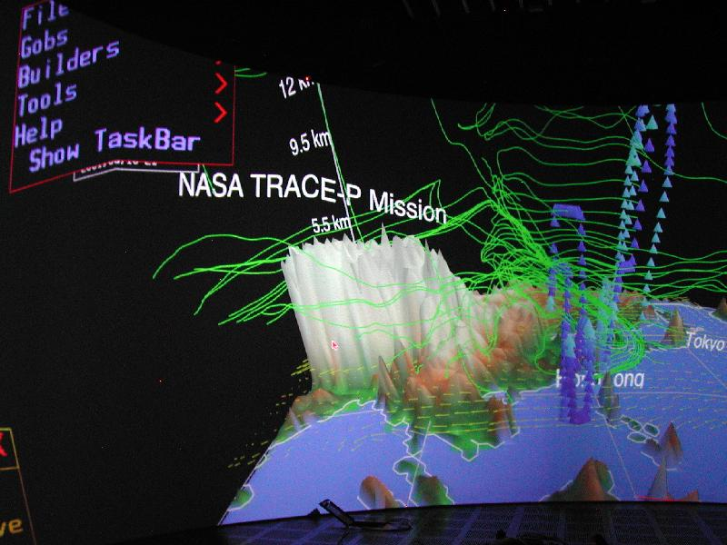
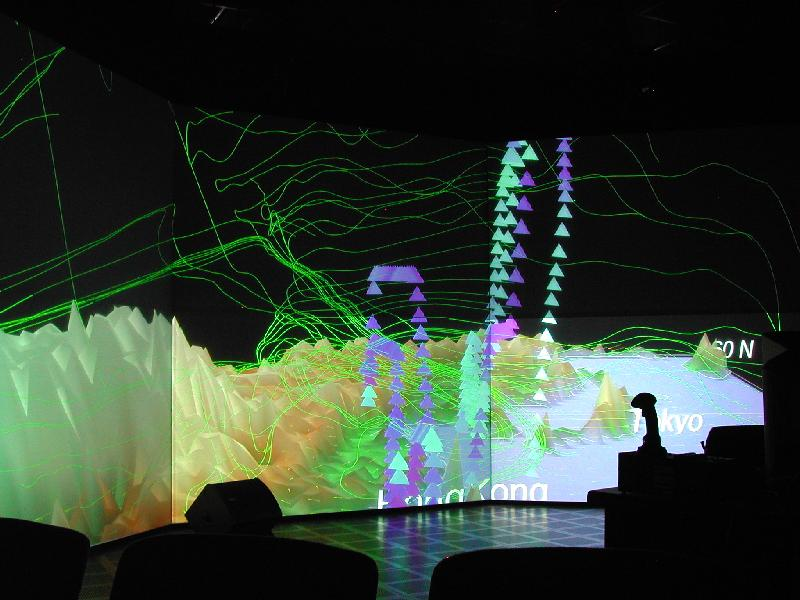

README for using vGeo in ACES VisLab
File: milagros.tacc.utexas.edu:
/lusr/vGeo/doc/milagros_tacc_utexas_edu_README.txt
Contact: Makoto Sadahiro makoto@tacc.utexas.edu
Date written: January 23, 2004
Date updated: March 11, 2006
Intro:
VRCO's vGeo stands for Virtual Global Explorer and Observatory. It was originally developed by oceanographers who are frustrated with the tools that were available to them. Naturally, vGeo is good with visualizing geological data sets. The vGeo runs on CAVElib. Many of vGeo setting is actually CAVElib settings for this reason. You should also read CAVElib documents along with README that we provide for CAVElib. It is actually critical that you read README for CAVElib that is equivalent to this README. ACES VisLab is basically already well configured to run vGeo. Installation of user environment to your account is a snap. You only need to execute one shell command before sourcing your .cshrc file. In ACES VisLab, it is set up in the way vGeo will drive all screens in 360 degrees by using all 13 projectors via all 6 sgi graphics pipes. The area of display is fully and easily configurable by each user via CAVElib configuration file. Due to our current hardware set up, only front curved screen is set up to be capable in stereo-mode. This requires the use of stereo glass that is available in VisLab. Normally, unless it is run in a simulator mode, a head tracking device with wand is used for input device to drive vGeo. In VisLab as of December 2003, trackd daemon, hiBall_client daemon is used to fetch input signals from hiBall head tracking device. There are also several input devices available to be used with vGeo. For further information, please refer to the VRCO's CAVElib documentation.
The vGeo environment installation:
There is a script to set up visualization environment. The scrip will setup your account for hiBall, CAVElib and vGeo. Running this script will be the easiest way to set up your user account for immersive environment. Issue the following command.
> /lusr/immersive_env/bin/create_immersive_env.milagros_tacc_utexas_edu.csh
This script assumes you are using csh/tcsh. If you are using another type of shell, please talk to us. The script will create few files in your home directory. The script will also add a line
source ${HOME}/.milagros_env
at the end of .cshrc in your home directory. This is your original sourcing point to all of environment that you will need for the immersive environment on "milagros.tacc.utexas.edu". Now, environment installation is done. Issue a command
> source ~/.cshrc
to let new setup to take effect, or you may re-login. Now your account is setup to run vGeo. The environment file,
${HOME}/.user.milagros.tacc.utexas.edu.vGeo_env
is where you will add your own environment values. There is a section that tells to add your own environment. The first line is
source /lusr/HiBall/env/milagros.tacc.utexas.edu.vGeo_env
Do not comment this out. Your own environment is to be added after this line. There is a section in the file to instruct you to add your environments. You may want to take a look at these files to see what kind of environment value is used so you can override what you need in your own environment file for vGeo. There are 2 environment variables that you should know.
setenv PFSHAREDSIZE 2824588000
setenv VRTIGO_WORKERS 16
PFSHAREDSIZE will change memory allowance for vGeo to run. It is often necessary to increase this number to load up larger data. You should play with this number. Good starting point is in-between 2 to 3 gigabytes.
VRTIGO_WORKERS defines how many processors are used to construct vGeo world at start up. It does not affect performance for interaction, but will speed up loading up vGeo data. We set it to 16 as default since milagros has 24 processors but we wanted to leave enough for other processes.
If you are confused, look into the account of username, testenv, to see how source and setenv is done. This account is normally setup for minimal immersive environment.
Setting up vGeo environment:
If installation of environment above is done correctly, you should now see a path to
/lusr/vGeo/bin
This is where some of useful tools reside. There is one thing you should do before running vGeo. Run "vGeoPreferences" to choose running mode of vGeo. You can in general just leave as it is, but it is often more convenient to run in different mode when you want to make a screen-shot for example.
Some useful tools:
There are few tools that will come handy when you are creating vGeo data. These utilities are stored in
/lusr/vGeo/bin
Running more than 1 vGeo:
It is possible to run more than 1 copy of vGeo. Please refer to equivalent README for CAVElib. There is a section for running more than 1 CAVE application.
Running demo and Basic operation in vGeo:
To run vGeo, you will need data along config files to describe it. There are some demos in /lusr/vGeo/demos directory. Please refer to vGeo documents from VRCO for how to make vGeo world. Let's try running vGeo with a demo.
> cd /lusr/vGeo/demos/TRACEP/config/
> vGeo main.vgeo
This will start up vGeo with TRACEP data set.

( vGeo in action on front-side curved screen. )

( Back-side flat panels with TRACE-P data. )
The vGeo will use 3 buttons on your wand. 1st button is to dis/activate menu and to select menu items. 3rd button is used to translate/rotate world in global coordinate. In another word, everything moves as you are in the center of world. 2nd button behaves a bit differently according to vGeo navigation mode. The vGeo has 2 navigation mode, drive and fly. What I have described so far is drive mode. In drive mode, 2nd button works same way as 3rd button. Only difference is that rotates in object coordinate instead of global coordinate. In another word, the object will rotate at where it is. In fly mode, 2nd button works as a stabilizer to fly. Click 2nd button once, and translate/rotate your wand. You will actually keep moving (translating) or rotating to the direction you just moved or rotated. It has a movement that is somewhat close to flying a helicopter. As you click on 2nd button again, it stabilizes. To toggle in-between fly mode and drive mode, click on 1st button to get floating menu, and click on File->Navigation menu. It will give you a dialog box, and there are buttons to select your navigation mode, fly or drive.
For more detail, please refer to vGeo documentation from VRCO. A good source would be
/lusr/vGeo/doc/vGeo_DemoGuide20.pdf
More documents:
This document is meant to be an introduction. There is a whole set of vGeo related documents from VRCO. Please refer to documents at
/lusr/vGeo/doc
Most importantly again:
Read *.README in /lusr/CAVE/doc directory. vGeo IS a CAVElib application. I have omitted most of CAVElib related topics here, so PLEASE read README for CAVElib.
makoto@tacc.utexas.edu
ACES 2.340
(512)475-6954
TEXAS Advanced Computing Center
Visualization and Data Analysis Group
updated: March 11th 2006